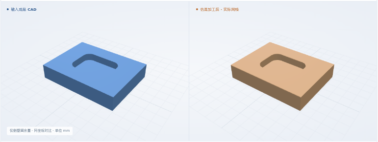

侧壁与槽底组合余量
粗加工留量：侧壁 0.2 / 槽底 0.2 mm
最终体积 IoU99.9453%
粗后 IoU 99.9644%（对照独立粗后预期 CAD）。两阶段轮廓、深度、底面检查通过。
全部结果均为软件仿真，未做真实切削。真实工艺卡整卡通过 0 份。工艺卡和判据多为开发方编写，未经工艺师傅批准。开发进度 →
新增：侧壁 / 槽底留量、两个原生工步、粗后与精后分别验收。
当前入口：与合成 PDF 同源生成的结构化工艺卡。尚未完成真实 PDF 的 Agent 自动转录与整卡验证。
粗加工留量：侧壁 0.2 / 槽底 0.2 mm
粗后 IoU 99.9644%（对照独立粗后预期 CAD）。两阶段轮廓、深度、底面检查通过。
粗加工留量：侧壁 0.2 / 槽底 0 mm

粗后 IoU 99.9596%（对照独立粗后预期 CAD）。两阶段轮廓、深度、底面检查通过。
粗加工留量：侧壁 0 / 槽底 0.2 mm
粗后 IoU 99.9544%（对照独立粗后预期 CAD）。两阶段轮廓、深度、底面检查通过。
粗加工留量：侧壁 0.15 / 槽底 0.25 mm
粗后 IoU 99.9670%（对照独立粗后预期 CAD）。两阶段轮廓、深度、底面检查通过。
同一类圆角单槽的四种工序配置；不是四种新零件特征。矩形坯 8 × 6 × 1.5 mm，通用 XYZ、同刀同装夹，φ1 平底铣刀，6061-T6 仅为材料标签。
三个状态均来自实际几何；粗后与精后分别有验收记录。
可查看各例图片或下载形状。
这是实际工步状态回放，不是连续刀具动画。精加工当前仍用全槽清除刀路，会经过已清除的区域；尚未做剩料刀路优化。
三个模块的输入、输出和验收依据
核对原文件、工步顺序、粗精依赖、双向余量与刀具可达性。本组另有 14 项准备阶段拒绝测试。
验收记录 ↗两个原生 PocketShape 工步；逐段检查刀路范围、深度、进给与顺序。粗后检查用的 NC 必须与完整 NC 的执行前缀一致。
验收记录 ↗完整 NC 一次连续执行，精加工继承真实粗后剩料。粗后与精后分别验收轮廓、深度和底面；不把预期 CAD 当成来料。
验收记录 ↗CAD、PDF、资源、粗后预期 CAD 和阶段条件均在生成 NC 前存档。11 层轮廓与 25 个底面取点；形状偏差上限 0.1 mm，深度名义值 ±0.1 mm，网格 0.025 mm，数值保护带 0.05 mm。IoU 不单独决定通过，也不代表制造公差认证。
四份 PDF 与 CAD 存档 ↗ · 完整数值结果 ↗ · 准备阶段 14 项拒绝记录 ↗复用现有 PocketShape 的侧向偏置和最终深度参数，新增双工步适配与验收。本次没有修改 FreeCAD 原生算法；未来遇到原生缺失能力时，仍须扩展并单独验证。
专用测试通道才执行错误 NC，检查几何检验能发现什么。
| 错误 | NC 检查 | 对照 IoU | 实际去料检查 | 证据 |
|---|---|---|---|---|
| 漏精加工 | 已拒绝 | 94.5511% | 最终几何不符 | 检查记录 ↗ |
| 粗加工未留余量 | 已拒绝 | 94.5775% | 粗后几何不符 | 检查记录 ↗ |
| 先精后粗 | 已拒绝 | 99.9453% | 最终几何通过，工序仍不合格 | 检查记录 ↗ |
| 精加工过切 0.25 mm | 已拒绝 | 95.4119% | 最终几何不符 | 检查记录 ↗ |
“未留余量”对照粗后预期 CAD，其余对照成品 CAD。先精后粗仍可能得到相同形状，所以必须单独检查工序顺序。